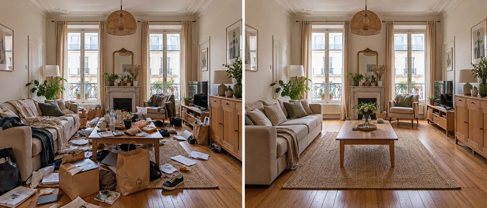
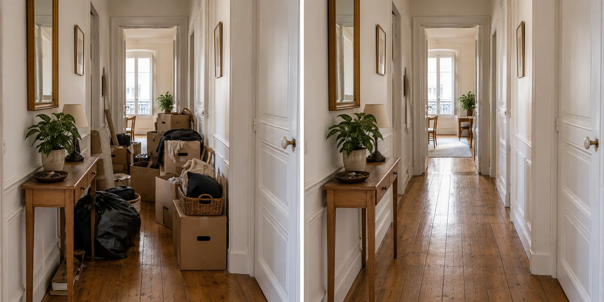
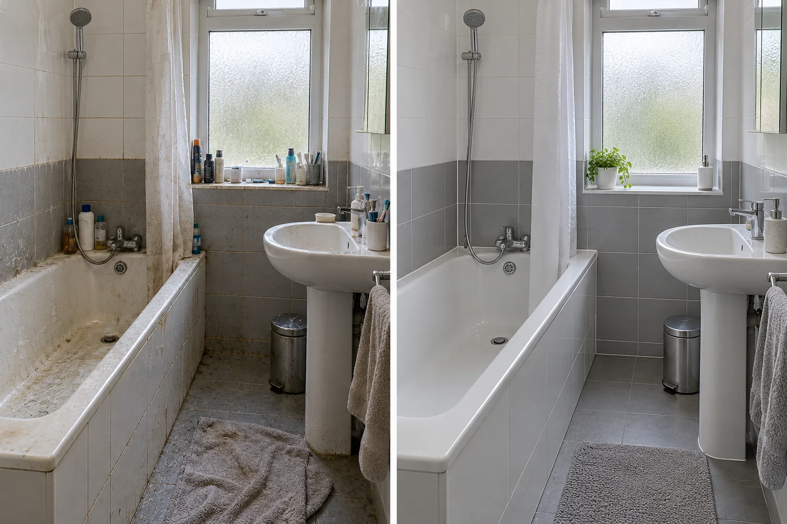
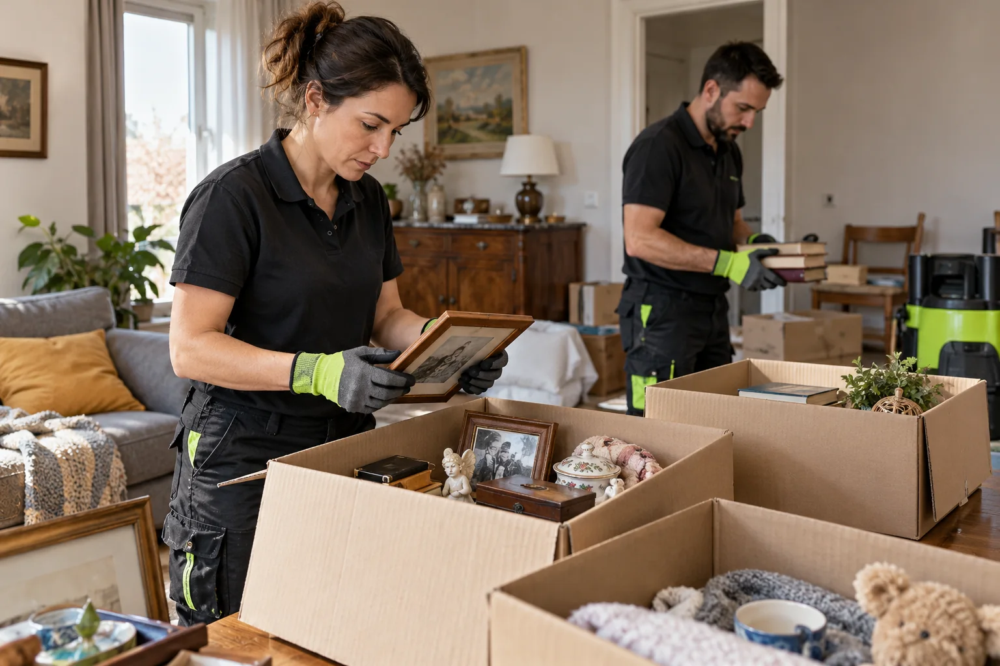

Nettoyage syndrome de Diogène à Tournan-en-Brie (77)
Maison briarde, appartement du centre ancien ou pavillon de Tournan-en-Brie encombré : tri avec l’habitant, évacuation, nettoyage et désinfection, sans jugement.
Derrière une façade ordinaire, un logement peut être rempli jusqu’au plafond. Rien de honteux : cela arrive et cela se traite.
Nous avançons à la vitesse de la personne, avec des écrits clairs et une équipe formée.

gratuitvisite et chiffrage
Une petite ville de Brie, entre champs et gare
Tournan-en-Brie compte environ 8 800 habitants. Son centre garde des maisons de bourg serrées autour de l’église, tandis que de grands quartiers de pavillons s’étendent vers les champs. La gare, sur la ligne P, relie la commune à Paris.
On y trouve des habitants installés depuis des décennies, parfois seuls dans de grandes maisons qui se sont remplies peu à peu.
Les familles s’alarment souvent tard, quand un voisin ou le facteur signale que quelque chose ne va pas.
- Maisons de bourg
- Pavillons
- Habitants isolés
Quatre cas que nous rencontrons
La maison de famille
Hérité ou habité depuis toujours, tout s’y est entassé.
L’appartement du centre
Un trois-pièces dont une seule pièce est encore utilisable.
Le pavillon et son garage
Le trop-plein a gagné garage, véranda et jardin.
Le logement de retraité
Ménage devenu impossible, aides absentes, déchets cumulés.
Dans chaque cas, nous commençons par écouter avant de proposer un plan.
Rues étroites
Dans les ruelles du bourg, le camion se gare parfois à distance. Nous prévoyons des rotations de portage et des protections pour les murs d’entrée.
Ce que nous demandons au téléphone
Trois choses seulement : l’adresse, le nombre de pièces touchées et la personne à joindre. Nous ne demandons ni histoire personnelle ni justification, et nous précisons d’emblée que la visite et le devis sont gratuits.
Famille venue de loin
Nombre de proches habitent Paris et viennent par le train. Nous planifions la visite à l’heure qui leur convient et leur envoyons un compte rendu détaillé.
Rouvrir d’abord les passages
Nous dégageons en premier les couloirs, l’entrée et l’escalier. Cela rétablit la circulation, la sécurité et l’accès des secours si besoin.
Les piles instables sont démontées de haut en bas pour éviter tout effondrement.
Une fois les passages libres, le reste du chantier devient lisible pour tout le monde.
- Sécurité d’abord
- Démontage par le haut

Terrains attenants
Autour des maisons, hangars, remises et jardins accueillent souvent les surplus. Nous inspectons chaque annexe avant de chiffrer.
Un signalement ne suffit pas
Quand un voisin s’inquiète, la mairie ou un bailleur peut exiger un nettoyage. Nous aidons à répondre dans le délai donné.
De l’arrivée au départ
L’équipe arrive à l’heure convenue, installe les protections, puis traite une pièce à la fois. Une pause est prévue à midi, et le départ se fait avant la fin d’après-midi afin que l’habitant retrouve son logement au calme.
Cuisine, salle de bain et sanitaires
Les pièces d’eau sont souvent les plus touchées : vaisselle accumulée, moisissures, canalisations bouchées. Nous les remettons en état d’usage sans prétendre remplacer un plombier.
Nous dégraissons, détartrons et désinfectons, puis signalons ce qui relève d’un artisan.
Relais utiles
Le centre communal d’action sociale peut orienter vers des aides ou un suivi. Nous donnons les coordonnées si vous le souhaitez.
Parler sans juger
Le premier contact compte. Nous demandons à l’habitant ce qui le gêne le plus et commençons par là.
Six étapes, de l’appel à la remise
Premier échange
Vous décrivez le logement, la personne concernée et ce que vous souhaitez ; aucun jugement n’est porté.
Visite sur place
Nous parcourons chaque pièce, notons les volumes et repérons les risques.
Proposition écrite
Le devis détaille tri, évacuation, nettoyage et délai, pièce par pièce.
Tri
L’habitant garde la main sur ce qui reste, ce qui part, ce qui est donné.
Évacuation et nettoyage
Sacs, caisses et encombrants sortent par filières ; sols et surfaces sont ensuite lavés et désinfectés.
Remise du logement
Dernier tour, photographies et conseils pour garder le logement dégagé.
La démarche générale est décrite sur la page méthode.
Comment les associer sans les imposer
Un enfant, un frère ou un ami peut assister au tri s’il y est invité. Sa présence aide parfois, mais la décision finale appartient toujours à l’habitant, sauf mesure de protection.
Papiers, vêtements, emballages
Les piles contiennent souvent des courriers importants. Nous les triions avec l’habitant plutôt que de les jeter en bloc.
Rats et blattes
Si des nuisibles sont repérés, nous le notons et recommandons une société spécialisée avant ou après le chantier.
Une pièce à rendre utilisable
Dans une maison où la salle de bain sert d’entrepôt, la baignoire peut être inaccessible depuis des années. Nous évacuons ce qui l’encombre, puis nettoyons joints, robinetterie et sols.
Si la moisissure a gagné les murs, nous le signalons avec photos pour que vous décidiez de la suite.
Nous ne remplaçons pas les sanitaires, mais nous préparons le terrain pour l’artisan.
- Désencombrement
- Joints et robinets

Chercher la source
Une odeur durable vient d’un déchet organique ou d’un support imbibé. Nous le retrouvons, l’extrayons et traitons la zone.
Un mot sur le regard porté
Beaucoup de personnes s’excusent dès notre arrivée. Nous répondons simplement que nous voyons ce logement comme un chantier, pas comme un jugement, et nous le disons à chaque équipe.
Frigo et plaques
Un réfrigérateur oublié peut contenir des denrées en décomposition. Nous le vidons en sac fermé, le nettoyons à fond et vérifions son état.
La personne décide de ce qui reste
Le tri n’est jamais imposé. Nous proposons trois caisses : à garder, à donner, à évacuer. L’habitant désigne, nous exécutons.
Les papiers, photos et objets de valeur sont mis de côté avant tout passage de l’équipe.
Chacun avance à son rythme, et nous pouvons répartir le tri sur plusieurs jours.
- Trois caisses
- Papiers préservés

Linge et literie
Les vêtements entassés sont triés, lavés si possible et sinon évacués. Matelas et canapés souillés partent aux encombrants.
Retrouver un lit
Nous dégageons d’abord le lit et son pourtour, car un sommeil possible change la vie de l’habitant.
Respirer sans risque
Les piles anciennes libèrent des spores et des particules. Nous ventilons, humidifions légèrement les surfaces avant de les déplacer et portons des masques filtrants pour ne rien disperser.
Ce qui fait varier votre devis
Le volume à évacuer et l’état des pièces pèsent le plus. Voici les critères.
Volume
Nombre de mètres cubes à sortir.
Pièces touchées
Une pièce, plusieurs, ou toute la maison.
Étage et accès
Escalier, absence d’ascenseur, portage.
Hygiène
Moisissures, déchets organiques, nuisibles.
Annexes
Garage, véranda, cave, jardin.
Délai
Urgence liée à un signalement ou une vente.
Si le logement est aussi dégradé par l’humidité, voyez notre service logement insalubre.
Dernier espace
Cave et garage servent de réserves. Nous les vidons en dernier, quand l’habitant a pris confiance.
Où va ce qui part
Déchets ménagers, encombrants, électroménager et produits dangereux suivent chacun leur propre filière. Des bordereaux le prouvent.
Un logement qui respire à nouveau
Le dernier passage se fait avec l’habitant ou son représentant. Chaque pièce est photographiée.
Nous remettons des conseils simples pour éviter que l’encombrement ne revienne.
Un conditionnement simple
Les déchets partent dans des sacs solides, les objets conservés dans des caisses fermées et étiquetées par pièce. L’habitant sait ainsi où retrouver chaque chose.
Placement discret
Les bennes sont placées à l’abri des regards et chargées en fin de journée si l’habitant le préfère.
Respect et pudeur
Nos intervenants ont l’habitude de ces logements. Ils ne commentent rien et n’emportent rien sans accord.
Gants, masques, combinaisons
Poussières, moisissures et déjections imposent un équipement complet, y compris des lunettes et des bottes lavables.
Avant, pendant, après
Des clichés datés montrent l’avancement. Ils servent la famille, le bailleur ou l’assureur.
Voies libres pour le camion
Avant de charger, nous repérons le chemin de sortie le plus court et le protégeons : moquette de couloir, protections de rampe, tapis devant la porte.
Pièce par pièce
Chaque pièce porte son procédé, sa durée et son prix. L’offre est valable un mois.
Planifier sans presser
Un studio demande un jour ou deux, une maison quatre à huit jours. Nous prévoyons des pauses pour la personne.
Rarement couvert
Le syndrome de Diogène n’est que rarement pris en charge. Nous le disons franchement avant de signer.
Qui décide
Si la personne est sous curatelle ou tutelle, nous demandons l’accord du représentant légal avant de commencer.
Accès toujours possible
Quand une porte est bloquée par des objets, nous l’ouvrons de l’intérieur avec précaution. Nous ne forçons jamais une serrure sans votre accord écrit.
Avant une expulsion
Un bailleur peut exiger la remise en état d’un logement. Un chantier achevé peut éviter une procédure.
Préparer l’acquéreur
Avant une vente, un nettoyage complet facilite visites et diagnostics. Nous coordonnons le calendrier avec l’agent.
Éviter la rechute
Quelques règles simples, un passage de contrôle à trois mois et un contact social réduisent le risque de rechute.
Autres métiers
Travaux, peinture, plomberie et soins médicaux relèvent d’autres professionnels. Nous vous aidons à les trouver.
Remettre l’extérieur en ordre
Dans un jardin envahi par des objets, nous ramassons, trions, évacuons et laissons le terrain prêt à être tondu par un paysagiste.
Réponse rapide
Face à un risque pour la santé ou à un délai judiciaire, nous pouvons visiter sous vingt-quatre heures.
Un message chaque soir
Nous résumons ce qui a été fait, ce qui reste, et ce que la personne a décidé.
Sans frais
Si un point doit être repris dans la semaine qui suit, nous revenons gratuitement.
Sans marquage
Véhicule banalisé, sacs opaques et tenue neutre protègent la dignité de l’habitant.
Les premières semaines
Nous conseillons de garder le logement aéré, de poser peu d’objets au sol et de convenir avec un proche d’un passage régulier.
Remise tracée
Les clés sont remises contre signature et restituées de la même façon.
Retrouvés puis rendus
Bijoux, espèces et documents d’identité retrouvés sont consignés puis remis à l’habitant ou à son représentant.
À mettre à l’abri
Si des animaux vivent dans le logement, nous demandons un hébergement provisoire pendant les travaux.
Contrôle avant reprise
Four, lave-linge et frigo sont nettoyés. Ceux qui sont hors d’usage sont évacués par la filière dédiée.
Étaler la dépense
Un chantier long peut être scindé en deux phases facturées séparément. Cela permet de commencer par l’essentiel et de reprendre plus tard.
Faire entrer l’air
Fenêtres et volets longtemps fermés sont ouverts dès que possible pour renouveler l’air.
Dégraissage
Carrelage, parquet ou lino sont dégraissés puis lavés, avec des produits adaptés à leur matière.
Traces de fumée et d’humidité
Nous lavons ce qui se lave et signalons ce qui exige une peinture ou un traitement.
Chantier autonome
Si l’eau ou l’électricité sont coupées, nous apportons projecteurs et réserves.
Chauffage et gel
En hiver, la maison peut être glacée et l’humidité accrue. Nous adaptons horaires et séchage.
Un lien à préserver
Un chantier bien mené rapproche parfois ; nous veillons à ne pas mettre l’habitant en position d’accusé.
Ne pas tout remplir
Nous laissons une pièce vide si l’habitant le souhaite, pour qu’il se repose.
Peu et bien
Quelques étagères, des caisses étiquetées et un circuit pour le linge suffisent à tenir un logement.
Un avis à la fin
Après le chantier, nous recueillons vos remarques pour améliorer notre méthode.
Nettoyage Diogène dans les autres communes de Seine-et-Marne
Le XV du Nettoyage se déplace dans tout le département, avec la même méthode et le même devis écrit gratuit après visite. Retrouvez la page de votre commune :
Champs-sur-Marne · Chelles · Fontainebleau · La Ferté-sous-Jouarre · Lieusaint · Meaux · Melun · Nemours · Noisiel · Ozoir-la-Ferrière · Roissy-en-Brie · Vaux-le-Pénil · Toute la Seine-et-Marne
Diogène à Tournan-en-Brie : vos questions
La personne doit-elle être présente ?
Elle peut l’être, et nous le recommandons pour le tri. Sinon, un proche de confiance décide avec elle.
Que devient ce qui est conservé ?
Il est nettoyé, rangé dans des caisses ou une pièce dégagée, et reste sous le contrôle de l’habitant.
Pouvez-vous intervenir dans une maison avec jardin ?
Oui. Nous traitons l’intérieur, les dépendances et les abords, chacun chiffré à part.
Le voisinage verra-t-il quelque chose ?
Nous utilisons un véhicule sans marquage et fermons les sacs avant de sortir.
Combien de temps dure un chantier ?
De un jour pour un studio à plusieurs jours pour une maison. Le devis donne une durée par pièce.
Aidez-vous pour un suivi après le chantier ?
Nous orientons vers le service social ou un médecin si la personne le souhaite.
Votre devis gratuit à Tournan-en-Brie, en toute discrétion
Décrivez le type de logement, le nombre de pièces touchées, votre lien avec l’habitant et un moment pour vous joindre. Aucune question gênante ne vous sera posée.
07 57 83 26 26